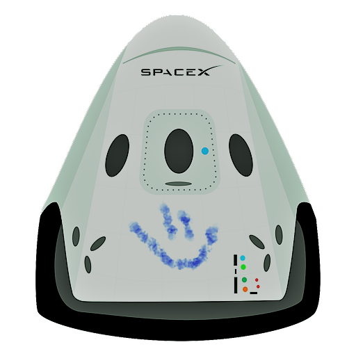

Hyperblog
Tu blog de cabecera
Aquá inicia la historia de un gran proyecto
Y este es el párrafo de inicio donde vamos a explicar las cosas increábles que se pueden hacer con las ramas

Los blogs son la mejor forma de compartir informacián y tus ideas. Mucho mas que ir a conferencias o salir en Youtube. Excepto si eres un rockstar. Pero estadásticamente no lo eres.... por ahora.
Suscrábete y dale like